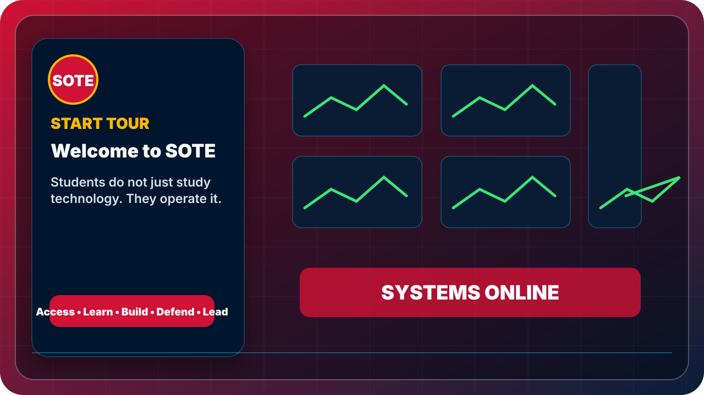

Start Tour
Welcome to SOTE
Students do not just study technology. They operate it.
Interactive Tour Mode
The route preserves the approved sequence and uses the updated tour media set.

Start Tour
Students do not just study technology. They operate it.